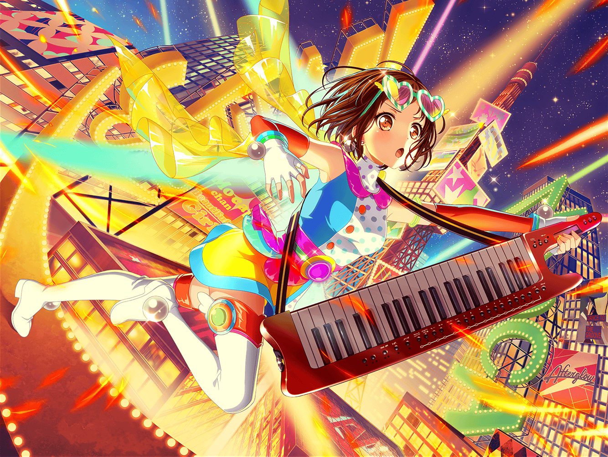

駅前
つぐみ
あっ、ひまりちゃん、このマンガ読んだんだ！
駅で広告見てから、気になってたんだよね
つぐみ
えっと、まずはイイネボタン押して、
それから……
つぐみ
『すっごく面白そう！ 今度貸してほしいな』
……よしっ、コメント送信！
つぐみ
あっ、{{userName}}さん！
こんにちは。
これからお仕事ですか？
つぐみ
私ですか？
今からクラスの友達と遊びにいくところです！
つぐみ
けど、ちょっと早く着きすぎちゃったんで、
SNS見て、時間つぶししてたんです
つぐみ
ひまりちゃんがよく投稿してるんですよ。
最近は、『今日はこのマンガ読んだ〜』とか、
『続き早く出てよ～』とか……
つぐみ
あはは、確かにマンガの話ばっかりですね！
私達、最近いっぱいマンガの貸し借りしてるので……
つぐみ
この前、Afterglowのみんなで
マンガのストーリーを考えようって話になって。
たぶん、それがきっかけです
つぐみ
内容は、みんなの好みが全然ちがって
ちぐはぐな感じになっちゃったんですけど……
でも、マンガってすっごく楽しいなって思いました！
つぐみ
それで、普段読まないようなマンガも読みたくなって、
お互いに持ってるマンガを貸し合ってるんですけど
つぐみ
ひまりちゃん、借りた本を読んだら
いつもこうしてSNSに上げてくれるんです！
つぐみ
はい！
読んでくれたんだーって嬉しくなります！
つぐみ
全然SNSに反応してくれないモカちゃんも
自分が貸したマンガなら何か反応あるはず！
……って、ひまりちゃんは言ってたんですけど……
つぐみ
まぁ……モカちゃんの反応は、相変わらずで……
あはは……
つぐみ
……えっ！
ひまりちゃんの投稿に毎回私のコメントが……？
えっ、イイネも……！？
つぐみ
えっ、ちょっと待ってくださいね。
……ほ、ほんとだ……全部やってる……
なんだか、指摘されちゃうとちょっと恥ずかしいですね
つぐみ
繋がりを大事にしてる、って……
そんな大げさなことじゃないですよ！
つぐみ
単純に、反応があった方が嬉しいかなって思っただけで……
だから自然と、コメントとかイイネしちゃうんだと思います
つぐみ
私、そういうちょっとしたことしかできないから……
得意なことって言われても、
すぐには思い浮かばないくらいですし
つぐみ
マンガのストーリーを考えた時だって、
私はあんまり力になれなくて……
モカちゃんがほとんど話を作ってくれて
つぐみ
だから、どんなに小さくても、
自分にできること大切にしたいんです
つぐみ
あっ、もしかして、
それが繋がりを大事にすること……なんですかね？
つぐみ
素敵だなんてそんなことないですよ。
でも、そう言ってもらえるのは嬉しいです。
ありがとうございます
つぐみ
あ、そういえば時間は大丈夫ですか？
引き止めちゃってすみません
つぐみ
お仕事頑張ってくださいね！